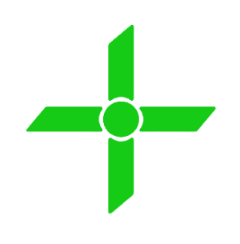

~/E3CNC/logs/install.log for easier debugging.
See the
releases page
for the full changelog.

E3 CNC UI
A modern, responsive CNC controller interface for Klipper-based machines.


Purpose
E3CNC UI (formerly Mainsail CNC) is a fork of Mainsail adapted and extended for CNC machine control.
It provides a real-time, browser-based control panel for Klipper-based CNC mills, routers, plasma cutters, and lathes. Built with Vue 3.5 and Vuetify 3, it runs on any device with a web browser.
Features
E3CNC UI Theme
Default green (#00FF00) branding theme with custom logo. Persisted to Moonraker database via the Vue store — the frontend saves and restores preferences automatically.
Ndot57 Theme
Dedicated theme with Ndot 57 Aligned display font, custom letter-spacing, and cyan accent colours. Font-family and letter-spacing inherit from root via CSS custom properties — all Vuetify typography classes respect the active theme.
Interactive WCS Preview
SVG coordinate map with click-to-move, home confirmation dialog (Enter/Esc), smooth tool dot animation, snap-to-grid, and stock size visualization for all six WCS zones.
Floating Panels
Any dashboard panel can be torn off into a freely draggable, resizable window. Dock it back with a smooth animation.
CNC Card Grid
G-code files displayed as rich cards with large toolpath thumbnails, stock dimensions, and CAM metadata at a glance.
Auto-Connect
Auto-discovers Moonraker on page load by probing ports 7125 and 7130. No manual IP entry needed for first-time setup.
Compact DRO
Live machine position, work offset, and velocity displayed in the top toolbar — always visible, never in the way.
Keyboard Jog
Arrow key jogging with toggle — move your machine axes directly from the keyboard, no mouse required.
Scroll-to-Top
Floating scroll-to-top button appears in the bottom-right corner after scrolling down, with a smooth fade transition.
State Persistence
Floating panel positions, editor files, dashboard scroll, and grid settings all survive page reloads.
Recent Changes
The full changelog is maintained at CHANGELOG.md — auto-generated from conventional commit history.
v0.10.0
Multi-distro package manager, consolidated install log
— The installer now auto-detects 6 distro families (Debian, Fedora, Arch, openSUSE, Alpine, RHEL).
Install logs are consolidated to
Quick Install
Recommended:
Use the
e3cnc-tui
tool for a unified interactive setup. It handles everything — agent vendoring, frontend build,
plugin deployment, and service restarts — in a single command.
git clone https://github.com/E3CNC/E3CNC.git ~/E3CNC
cd ~/E3CNC
./e3cnc-tui install
Run
./e3cnc-tui
with no arguments for an interactive menu that loops after each command. Use
[W]
to switch between multiple Klipper/Moonraker instances on the same machine. See the
wiki
for details and other install methods.
Updates
E3CNC no longer relies on Moonraker's
[update_manager]
integration for full-stack updates. Use
./e3cnc-tui update
or the in-app
Update
action instead.
# Preview changes safely
./e3cnc-tui update --dry-run
# Apply the latest release
./e3cnc-tui update
Run
./e3cnc-tui update
on the host for the full stack redeploy instead of relying on the update manager's post-update hook.
Replace
~/E3CNC
with an absolute path if needed (e.g.
/home/pi/E3CNC
). The
e3cnc-tui update
command handles backups before every update and preserves the 3 most recent automatically.